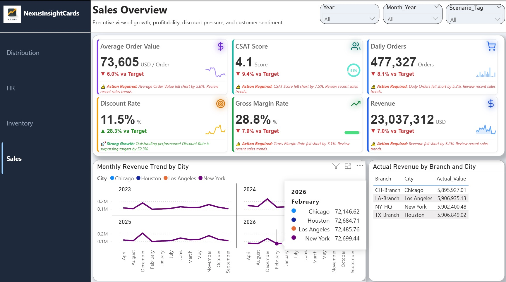

A component with a purpose.
KPI layouts, trend displays, comparisons and interactions scoped around the report and the audience using it.
BI plugins & product engineering
Commission a standalone visual for Microsoft Power BI when built-in charts cannot support your reporting workflow. Nexus can scope, design, build and test the component, then package it for the distribution route agreed with your team.
Our own product
We built Nexus InsightCards as a standalone Power BI visual. It combines KPIs, period comparisons, sparklines and narrative alerts in one responsive grid. Try the downloadable Power BI showcase to see what that means inside a report.

KPI layouts, trend displays, comparisons and interactions scoped around the report and the audience using it.
Small utilities for data preparation, reporting hand-offs and specialist user journeys where a full application would be unnecessary.
Agree supported environments, packaging, performance targets, testing and a maintenance route. Certification or marketplace approval is never implied.
Tell us which decision the visual should support, what the built-in options miss and which actions users need to take.
Delivery checklist
A multi-site operations team, for example, might need to compare actuals against target and drill into exceptions without leaving a report. Test that workflow with anonymised data before rolling out the visual.
If your existing report is slow rather than missing an interaction, start with a Power BI performance review.
Read our guide to choosing a custom Power BI visual ↗
Free project tool
Turn a reporting requirement into a brief you can share with your team or a developer. No sign-up, file upload or price estimate.
Your answers stay in this browser. Do not enter sensitive information.